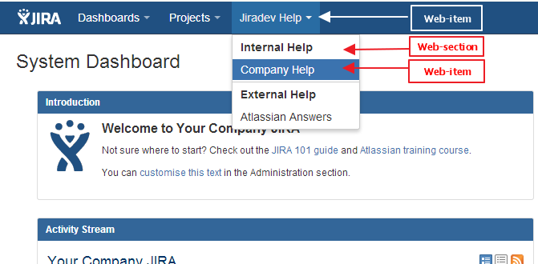

In the previous tutorial, we created a web-item to provide a link to Atlassian Answers site for users logged into JIRA. What if we have multiple links, that we want displayed under different sections. For example, we want to provide a "Help" dropdown, with two sections. Internal and External. Internal section will have a link that redirects to our company help website, while the external displays the Atlassian Answers link we created earlier.
Take a look at the screenshot below. You will see that we have a total of 3 web-items and 2 web-sections.

groupId: com.jiradev.jira.plugins
artifactId: jiradev-web-section
version: 1.0
First add the main Help web-item
Select 25 for the web-item option
Plugin module name: Jiradev Help Menu
Enter section: system.top.navigation.bar
Enter link url: default.jspa (we will not be using this)
Show advanced setup: N
Add another plugin module: Y
Add the Internal Help web section
Select 30 for web-section
Plugin module name: Internal Help Web Section
Enter location: jiradev-helpmenu-link (This will be the key of the main Help web-item appended by -link)
Show advanced setup: N
Add another plugin module: Y
Add the Company Help web-item
Select 25 for Web-item
Plugin module name: Company Help Link
Enter section: jiradev-helpmenu-link/internal-help-web-section (this is the link id of the main Help web-item/key of the internal help web section)
Enter link url: http://www.jiradev.com/aboutme.html
Show advanced setup: N
Add another plugin module: Y
Add the External Help web section
Select 30 for web-section
Plugin module name: External Help Web Section
Enter location: jiradev-helpmenu-link (This will be the key of the main Help web-item appended by -link)
Show advanced setup: N
Add another plugin module: Y
Add the Atlassian Answers web-item
Select 25 for Web-item
Plugin module name: Atlassian Answers Link
Enter section: jiradev-helpmenu-link/external-help-web-section (this is the link id of the main Help web-item/key of the external help web section)
Enter link url: https://answers.atlassian.com/
Show advanced setup: N
Add another plugin module: N
Woohoo. You now know about web-sections. 2 modules down. A lot more fun stuff ahead.